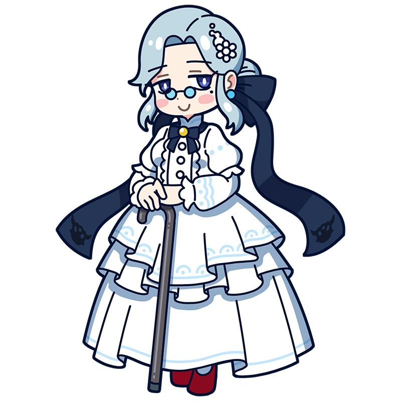

There’s nothing to fear.
Just pursue beauty as you please,
with pure, fucking sincerity.
Pissarro
A gentle elder who guides the young,
with a fire of rebellion burning within
The oldest member of the Impressionists and a beloved leader among the younger muses. Calm and attentive, she watches over those around her while remaining open to new ideas. She seems slightly troubled by the rough words that occasionally slip from her mouth.
Style
ImpressionismHometown
St. Thomas(present-day USA)
Classics
- "Hoarfrost"
- "The Square of the French Theatre"
- "Boulevard Montmartre" etc.
This is the Pissarro piece!
Hoarfrost
Pissarro took part in all eight Impressionist exhibitions, and this was one of the works he showed at the first. His focus on farmers and the land reflects the influence of Millet and the Barbizon School. The rough brushstrokes of the frost, built up with thick paint, make it look as though real frost has settled on the ground. Critics at the time hated it, saying it looked like “paint scraps scattered across the canvas.”
Year
1873
Medium
Oil on canvas
Dimension
65.5 cm x 93 cm
Collection
Musée d'Orsay
（France)
Who is Pissarro?
Camille Pissarro
One of the leading Impressionists and the group’s oldest member, Pissarro supported and guided his fellow artists. He invited forward-thinking painters such as Seurat, Cézanne, and Gauguin to join the Impressionist exhibitions, making his role essential to the group’s long career. His gentle, caring nature earned him the nicknames “Moses” and “the Elder.” Yet beneath that calm exterior was a radical political thinker and staunch anarchist.
Full Name
Jacob Abraham Camille Pissarro
Born
July 10, 1830
Died
November 13, 1903(aged 73)